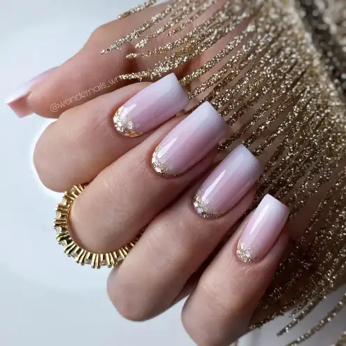
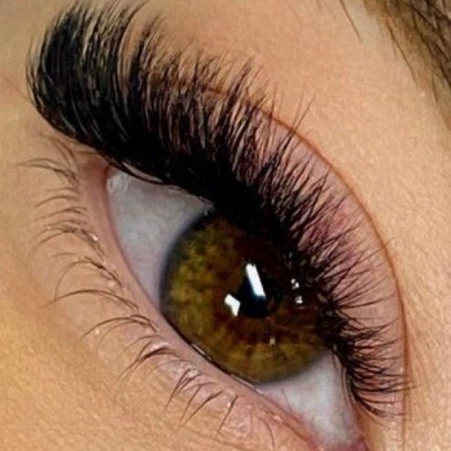

!Bienvenidos a VeDen!
En VeDen podras lucir tus uñas y pestañas como siempre quisiste, un centro donde el mimo, el detalle y el cuidado hacia el cliente predomina por encima de todo, un centro con grandes profesionales.
Te Mostramos algunos de nuestros servicios

Babyboomer
Las uñas baby boomer, también conocidas como french fade, son una especie de manicure francés, pero con los colores degradados.
 Volumen medio
Volumen medio
Se utiliza para conseguir un look Deluxe sin perder la naturalidad. Consiste en adherir 4 extensiones de pestañas, por cada pestaña natural 4D.
 Kapping
Kapping
El Kapping consiste en aplicar una fina capa de acrílico o gel fortificador sobre la uña que actuará como una barrera protectora.

Mega volumen
El empleo de esta técnica requiere precisión y abanicos creados a la perfeccion para asegur una mejor retención en las pestañas naturales.